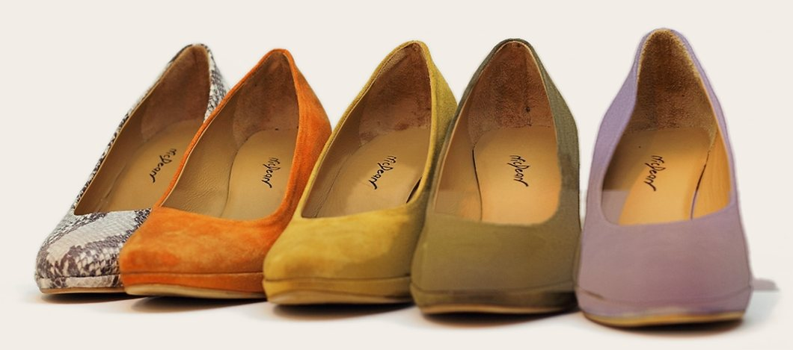
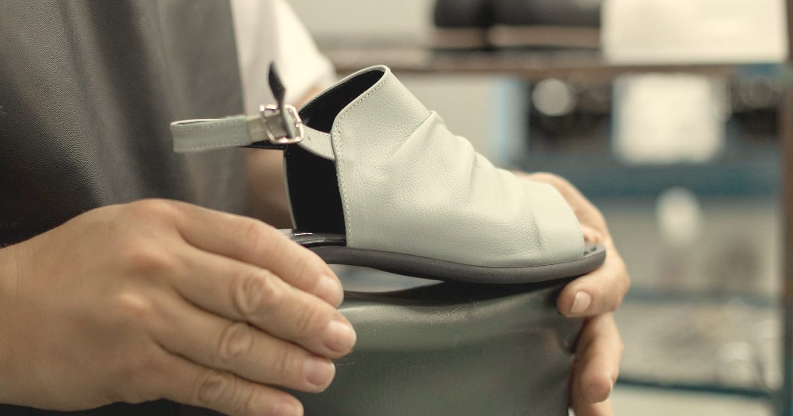
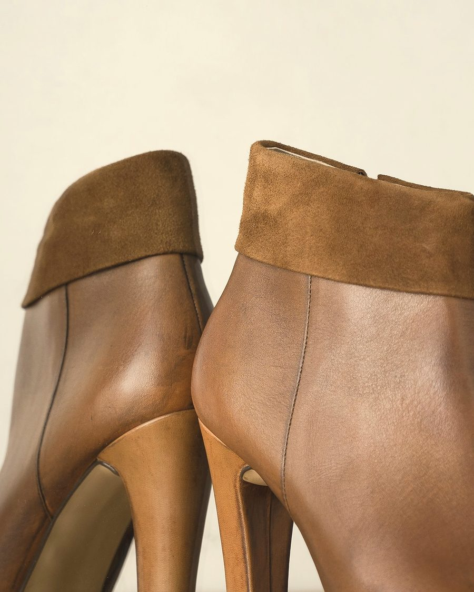

Cinque coloriDécolleté con plateau, firma NicDean sul sottopiede.Tocca un colore per vederlo da solo.
Scarpe fatte a Villatora dal 1975
Calzature della famiglia Nicoletto, fatte a Villatora di Saonara per i negozi d'Europa e del Nord America. Si comprano anche nel nostro spaccio di fabbrica.
Orari dello spaccio Dal lunedì al venerdì, 8-12 e 14:30-17Dal 1975 la famiglia Nicoletto fa scarpe a Villatora di Saonara
Calzature vendute soprattutto in Europa e nel Nord America. Materiali di prima scelta e uno stile che cambia a ogni stagione, per una scarpa comoda e facile da indossare.
- 1975L'attività artigianale della famiglia Nicoletto diventa un calzaturificio.
- 1997Il 27 ottobre nasce la Nic Dean S.r.l.
- 2013Il 5 ottobre apre lo spaccio di fabbrica: le scarpe fatte in azienda, in vendita a tutti.
Lo spaccio di via Lombardia
Per donna, uomo e ragazzo. Da ginnastica, eleganti e sportive.
Lo spaccio vende a tutti le calzature prodotte interamente in azienda. Si paga in contanti o con carta di credito e, se vuoi, puoi prendere un appuntamento per mail o telefono. Orari e indirizzo
Per negozi, fiere ed eventi
Produciamo per i negozi, soprattutto in Europa e nel Nord America, e prepariamo anche ordini con un numero consistente di calzature per fiere o eventi. Scrivi a info@nicdean.it

Calzature di tutti i tipi e di tutti i numeri
Lo spaccio è dentro l'azienda, in via Lombardia 29. Per un appuntamento chiama o scrivi.
Via Lombardia 29, 35020 Villatora di Saonara (PD), apri la mappa
- Lunedì-venerdì
- 8:00-12:00 e 14:30-17:00
- Pagamento
- contanti o carta di credito
